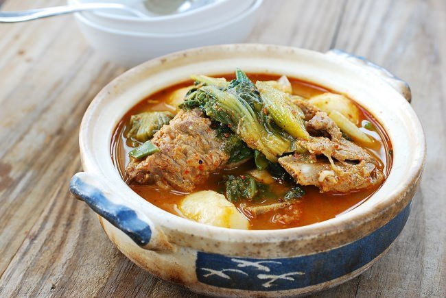
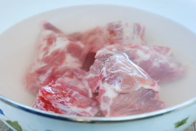
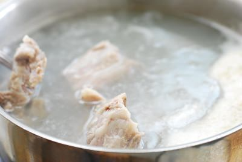
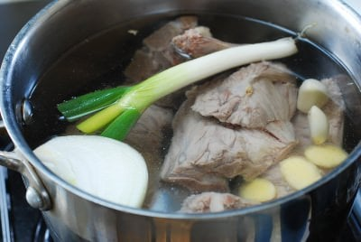
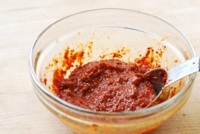
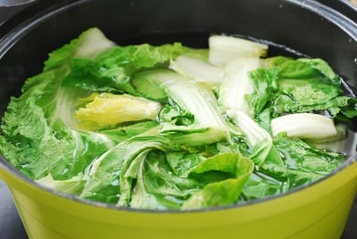
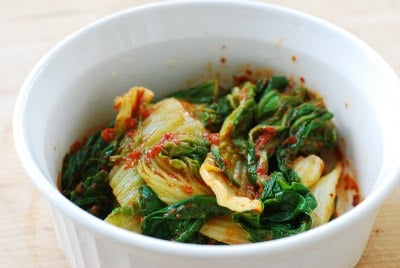
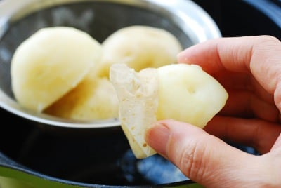
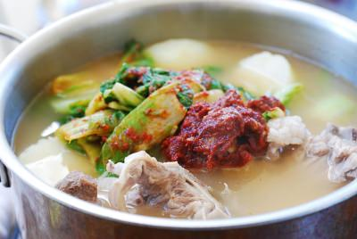
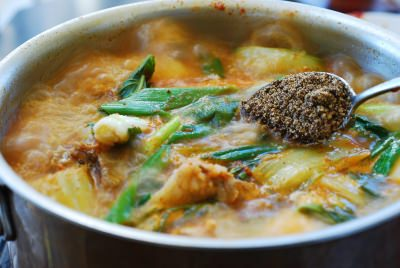

Gamjatang (Spicy Pork Bone Stew)

Ingredients
For the broth
- 2 pounds of pork spine or neck bones
- 1/2 small onion
- 5 garlic cloves
- 4 thin ginger slices about 1-inch rounds
For the stew
- 5 to 6 ounces young cabbage, putbaechu, 풋배추 or napa cabbage (1 cup, boiled)
- 3 small white potatoes
- 6 to 8 perilla leaves, kkaennip, 깻잎, roughly sliced
- 2 scallions, roughly sliced
For the seasoning
- 1 tablespoon gochugaru (Korean red chili pepper flakes)
- 1 tablespoon gochujang (Korean red chili pepper paste)
- 1 tablespoon doenjang (Korean fermented soybean paste)
- 1 tablespoon gukganjang, 국간장, soup soy sauce or fish sauce
- 1 tablespoon minced garlic
- Salt and pepper to taste
- 1 tablespoon crushed perilla seeds, 들깨가루 Or sesame seeds
Instructions
-
Soak the bones for an hour or longer in cold water.
Change the water half way through if you can. Drain.

-
Bring a medium pot of water to a boil. Drop the bones in.
Let it come back to a boil. This will take about 7 to 8 minutes.

-
Drain the bones. Wash the bones under running water.
Clean the pot. Return the bones back to the pot.
Add 8 cups of water, the onion, garlic, ginger and scallion.
Bring it to a boil. Continue to boil, uncovered, for
10 minutes over medium high heat. Reduce the heat to medium low.
Continue to boil, covered, for 50 minutes to an
hour until the meat is tender and the broth is milky.

-
Mix the seasoning ingredients well together.

-
Bring a medium pot of water to a rapid boil.
Blanch the cabbage until the white parts turn soft, 4 to 5 minutes.
Remove the cabbage from the pot (keep the hot water to boil the potatoes)
and shock in cold water to stop the cooking. Drain and squeeze out water.
Cut into 2 to 3-inch lengths.

-
Mix the cabbage well with 1 tablespoon of the seasoning.

-
Cut the potatoes in half with the skin on. In the pot of water
used to blanch the cabbage, boil the potatoes until almost cooked.
Peel the potatoes.

-
Remove the meat from the broth. Discard the aromatic vegetables,
reserving the broth (about 5 cups). Place the bone back in the pot with the broth.
Add the cabbage, potatoes, and the remaining seasoning. Boil for about 10 minutes.

-
hrow in the perilla leaves and scallion. Add salt and pepper
to taste. Boil for an additional couple of minutes, and then add
the crushed perilla seeds.
